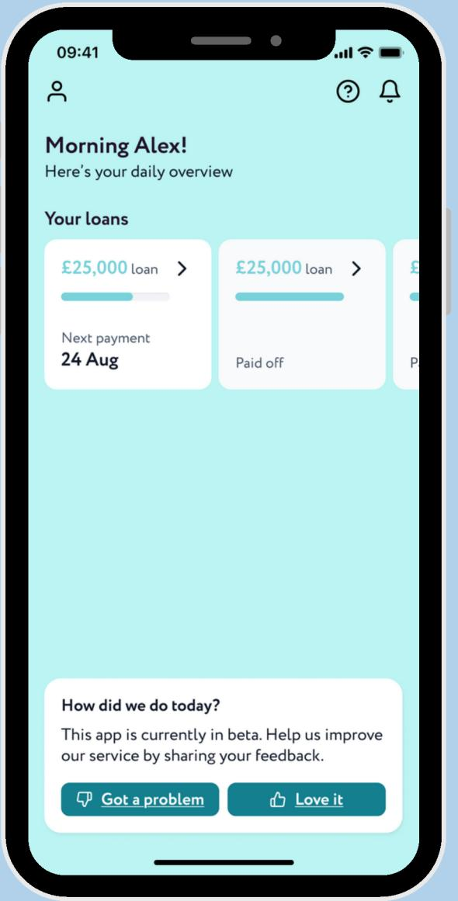
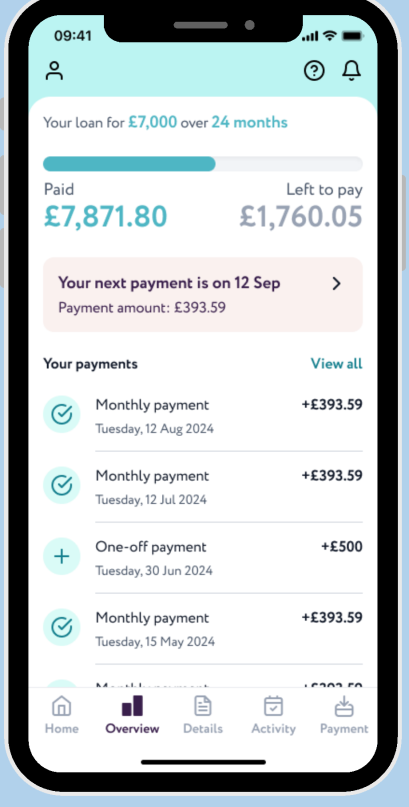
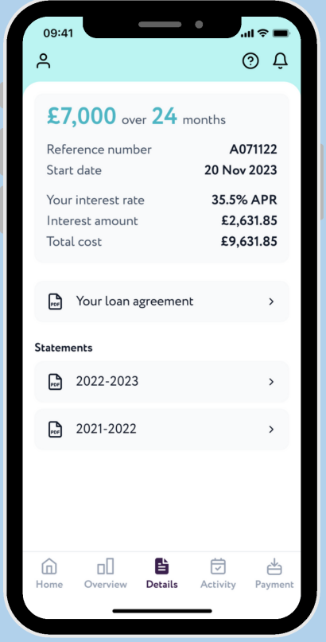
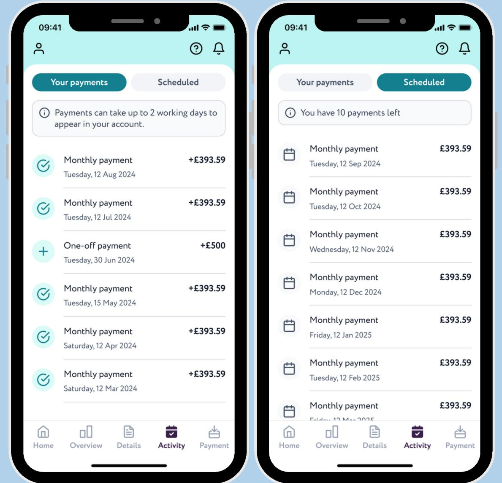
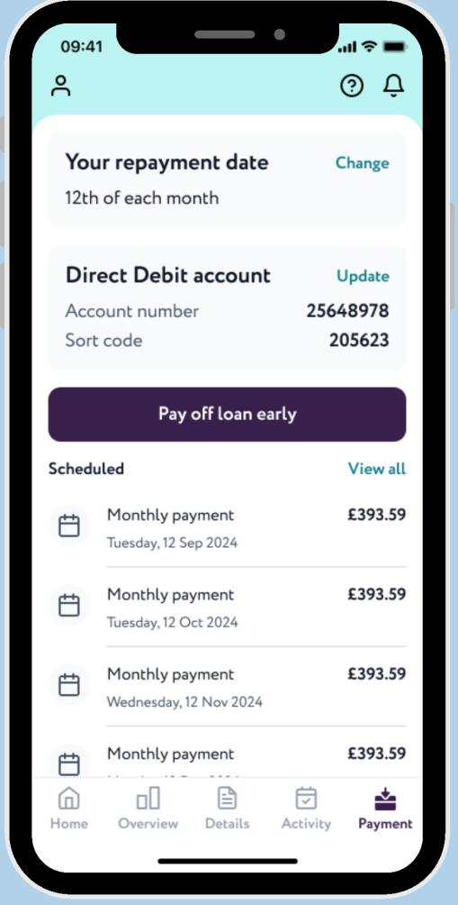
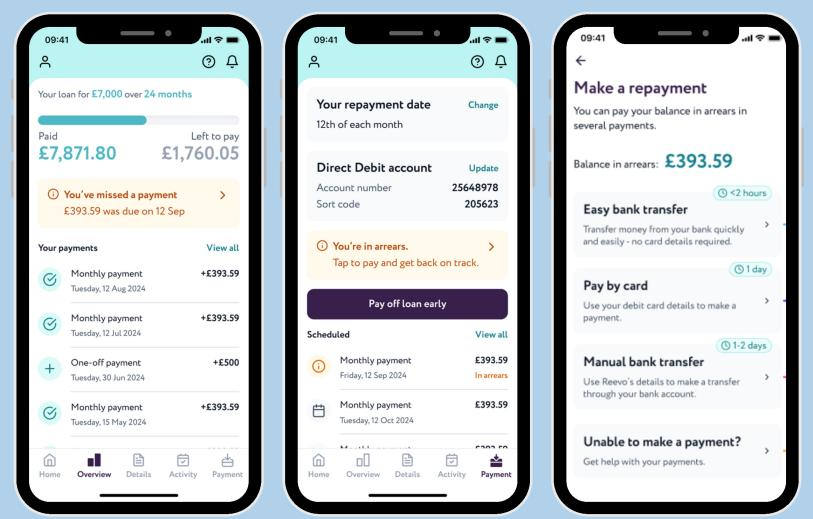
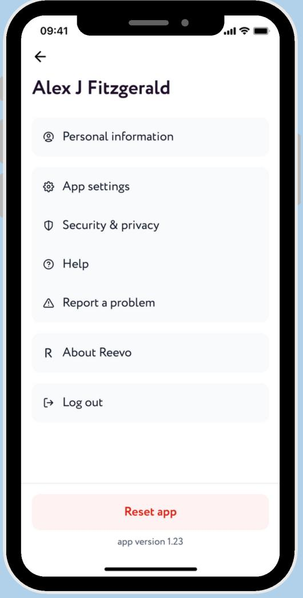

Reevo Mobile App — 0→1 Launch
Background
The business wanted to push digital adoption up and pull operational cost down by cutting the volume of general-query support tickets. The case was that a mobile channel would compound in value the longer it existed, so building it now, well, was worth more than building it later, fast.
Context
Technical Product Manager for Amplifi Capital, a UK-based fintech servicing a £2M monthly loan and fixed-savings portfolio. Owned the product end-to-end — MVP scope, roadmap, technical integration decisions (Amazon Cognito for auth, Twilio for SMS, Salesforce for CRM sync) and go-to-market readiness — partnering with C-suite, engineering, UX, compliance, legal and marketing. Led a distributed cross-functional squad of 15 across India and the UK.
Problem
Customers could only self-service their loans through a web portal — no mobile option existed. That limited accessibility, and it was driving avoidable support volume from customers who expected an on-the-go experience. Any new app also had to satisfy strict security and compliance requirements from day one, not as a bolt-on.
Process
- Owned roadmap, PRDs and release planning, using MoSCoW prioritization to balance business value, UX, platform security and engineering effort — and to get stakeholder alignment across two countries.
- Sequenced a security-first backbone: Open Banking connectivity, card payments, Amazon Cognito MFA, device binding, secure storage migration, app integrity checks and compromised-device protection.
- Reviewing App Store analytics, spotted an unexpected pattern of organic, pre-login downloads sitting alongside the invite-only rollout to existing customers. Hypothesized these were prospective borrowers arriving directly from Play Store / App Store search rather than the invite flow — and shipped a pre-login page that redirected them to a loans page. Confirmed the effect with an A/B test before rolling it out fully.
- Used GA4, Firebase and Hotjar to track activation, feature adoption and retention against MAU/DAU, funnel and cohort metrics — balancing feature velocity against platform reliability throughout.
Prioritization Call: Device Binding
The business wanted device binding — auto-logging out a user's previous device the moment they logged in on a new one. I turned it down, and here's the actual comparison that drove it:
Same engineering capacity, two options, one clearly lower-impact by the data we had. That bandwidth went into the higher-impact security work instead — a call I revisited every quarter as usage patterns shifted, since "low today" isn't "low forever."
Visuals







What the 25% actually meant: At 2.5x the industry benchmark, it wasn't just a good number — it was proof that customers would accept the app as a primary channel, not a side option.
Beyond the App: Platform-Wide Improvements
- 65% fewer misrouted tickets via a Salesforce Omni-Channel implementation.
- 30% fewer complaint follow-ups through Salesforce Case Management.
- Zero security incidents post-MFA rollout, with 50% user adoption.
- 75% of customers renewed fixed savings products through automation.
In Hindsight
I'd have pulled mobile number verification earlier into the loan disbursement process itself. Verifying the number at disbursement — rather than as a separate pre-MFA step in the app — would have removed a redundant verification stage and shortened the onboarding path to first login.